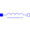
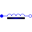

SaturatingInductorSimple model of an inductor with saturation |

|
Information
This information is part of the Modelica Standard Library maintained by the Modelica Association.
This model approximates the behaviour of an inductor with the influence of saturation, i.e., the value of the inductance depends on the current flowing through the inductor (Fig. 1). The inductance decreases as current increases. Note, that hysteresis is not taken into account.
The approximation of the flux linkage is based on the atan function with an additional linear term,
as shown in Fig. 2:
Psi = Linf*i + (Lzer - Linf)*Ipar*atan(i/Ipar) L = Psi/i = Linf + (Lzer - Linf)*atan(i/Ipar)/(i/Ipar)
This approximation is with good performance and easy to adjust to a given characteristic with only four parameters (Tab. 1).
| Variable | Description |
|---|---|
Inom. |
Nominal current |
Lnom |
Nominal inductance at nominal current |
Lzer |
Inductance near current = 0; Lzer has to be greater than Lnom |
Linf |
Inductance at large currents; Linf has to be less than Lnom |
The parameter Ipar is calculated internally from the relationship:
Lnom = Linf + (Lzer - Linf)*atan(Inom/Ipar)/(Inom/Ipar)

|

|
The flux slope in Fig. 2 is equal to Lzer for small currents.
The limit of the flux slope is Linf as the current i approaches infinity.
The nominal flux is indicated by the product of the nominal inductance Lnom and the nominal current Inom.
Parameters (4)
| Inom |
Value: Type: Current (A) Description: Nominal current |
|---|---|
| Lnom |
Value: Type: Inductance (H) Description: Nominal inductance at Nominal current |
| Lzer |
Value: Type: Inductance (H) Description: Inductance near current=0 |
| Linf |
Value: Type: Inductance (H) Description: Inductance at large currents |
Connectors (2)
| p |
Type: PositivePin Description: Positive electrical pin |
|
|---|---|---|
| n |
Type: NegativePin Description: Negative electrical pin |
Used in Examples (1)
|
Modelica.Electrical.Analog.Examples Simple demo to show behaviour of SaturatingInductor component |
Used in Components (1)
|  |
Modelica.Electrical.Polyphase.Basic Simple model of inductors with saturation |